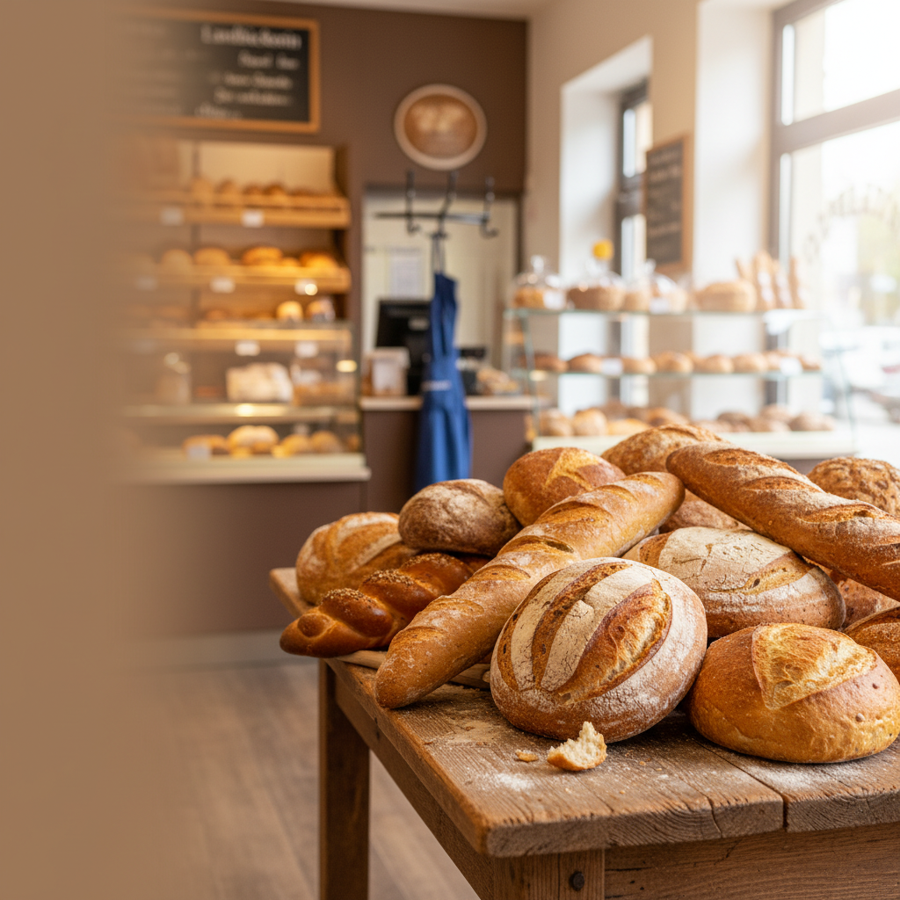
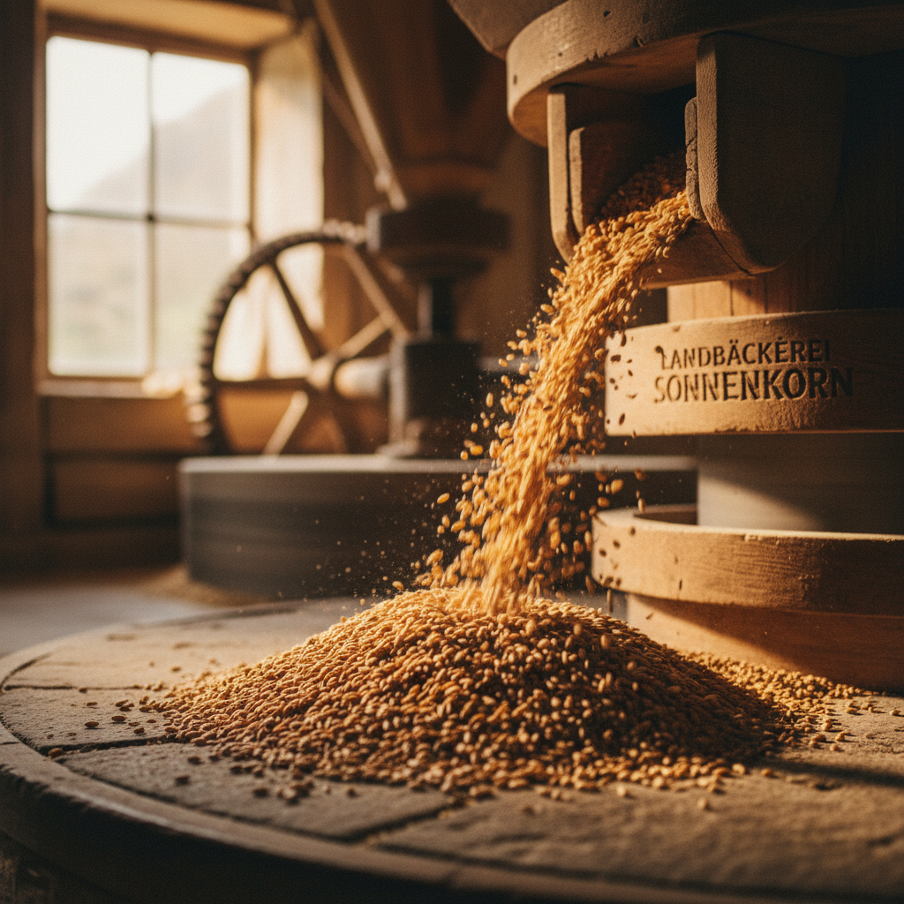
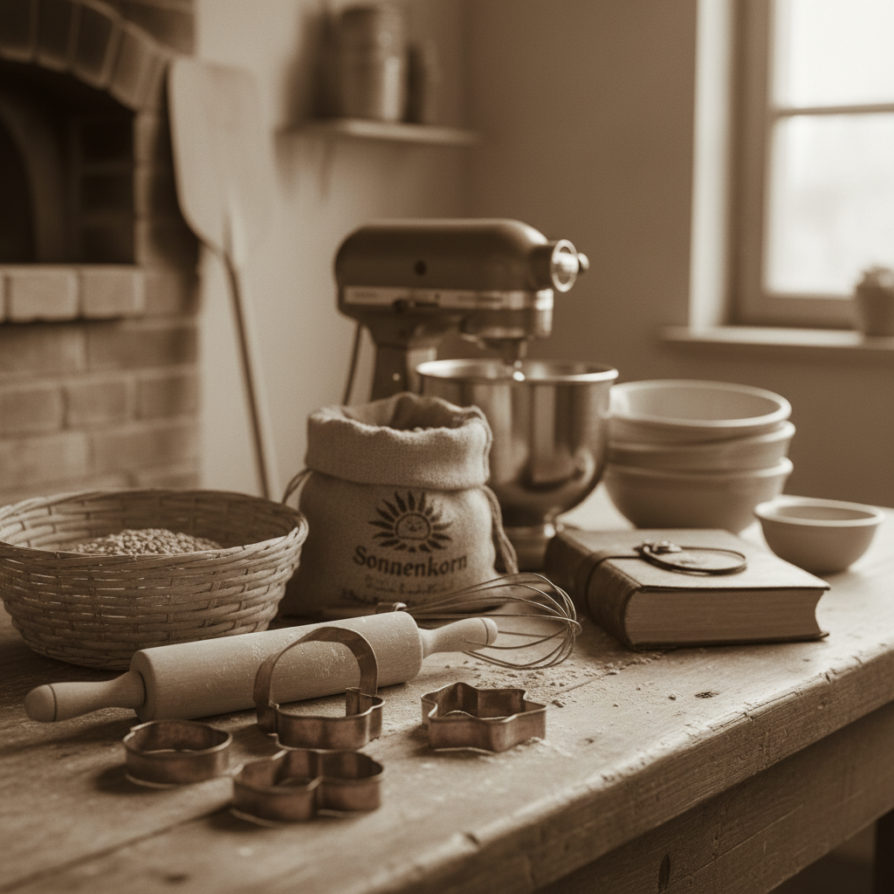
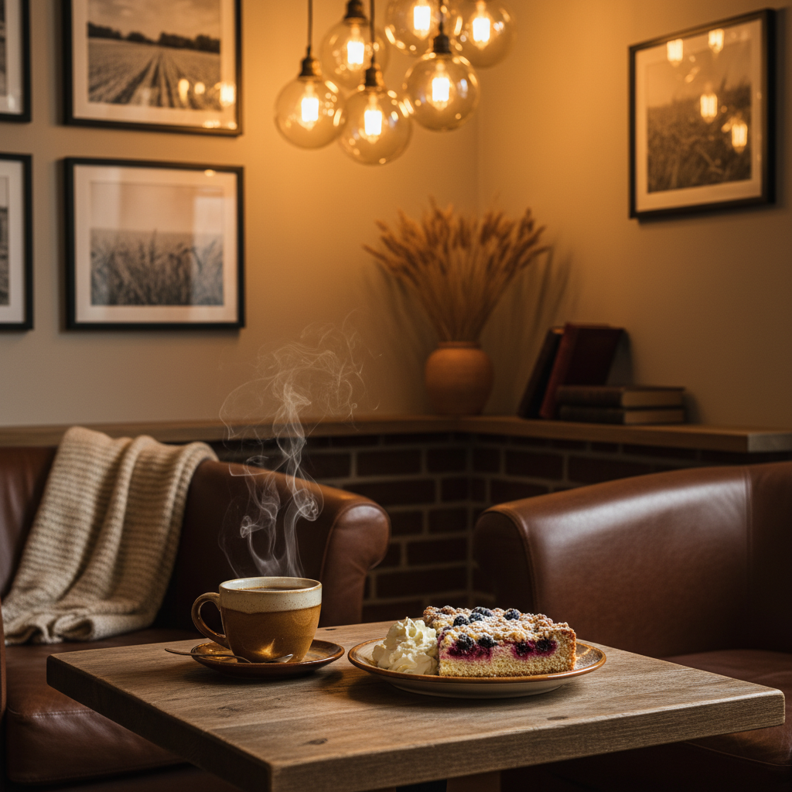

Handwerk, das man schmeckt.
Ihre Landbäckerei im Münsterland – seit 1956. Traditionell, ehrlich und mit Getreide aus eigener Mühle.

- Seit 1956
- Eigene Mühle
- Regionale Zutaten

Unsere Mühle
Das Herzstück unserer Bäckerei: Hier verarbeiten wir unser Getreide zu feinstem Mehl – die Grundlage für unsere Backwaren.

Backtradition
Seit Generationen leben wir die Backtradition. Handwerkliches Können und traditionelle Rezepte verbinden sich zu einzigartigen Geschmackserlebnissen.

Unser Café
Genießen Sie unsere Backwaren und Kaffeespezialitäten in gemütlicher Atmosphäre. Ein Ort zum Verweilen und Genießen.
Vom Korn zum Brot
Das Kornfeld
Alles beginnt mit dem besten Getreide, direkt aus der Region.
Die Mühle
In unserer eigenen Mühle wird das Korn schonend vermahlen.
Der Teig
Handwerkliches Können und traditionelle Rezepturen vereinen sich.
Der Ofen
Im Ofen entfaltet sich der volle Geschmack unserer Backwaren.
Das Brot
Genießen Sie den Duft und Geschmack von frisch gebackenem Brot.